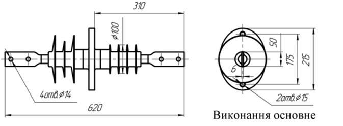
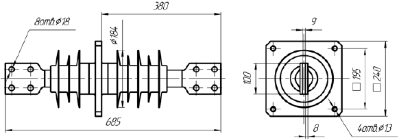
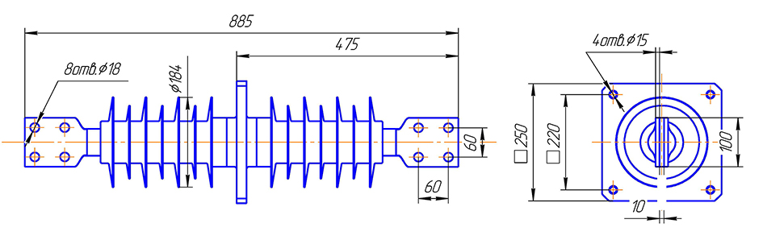
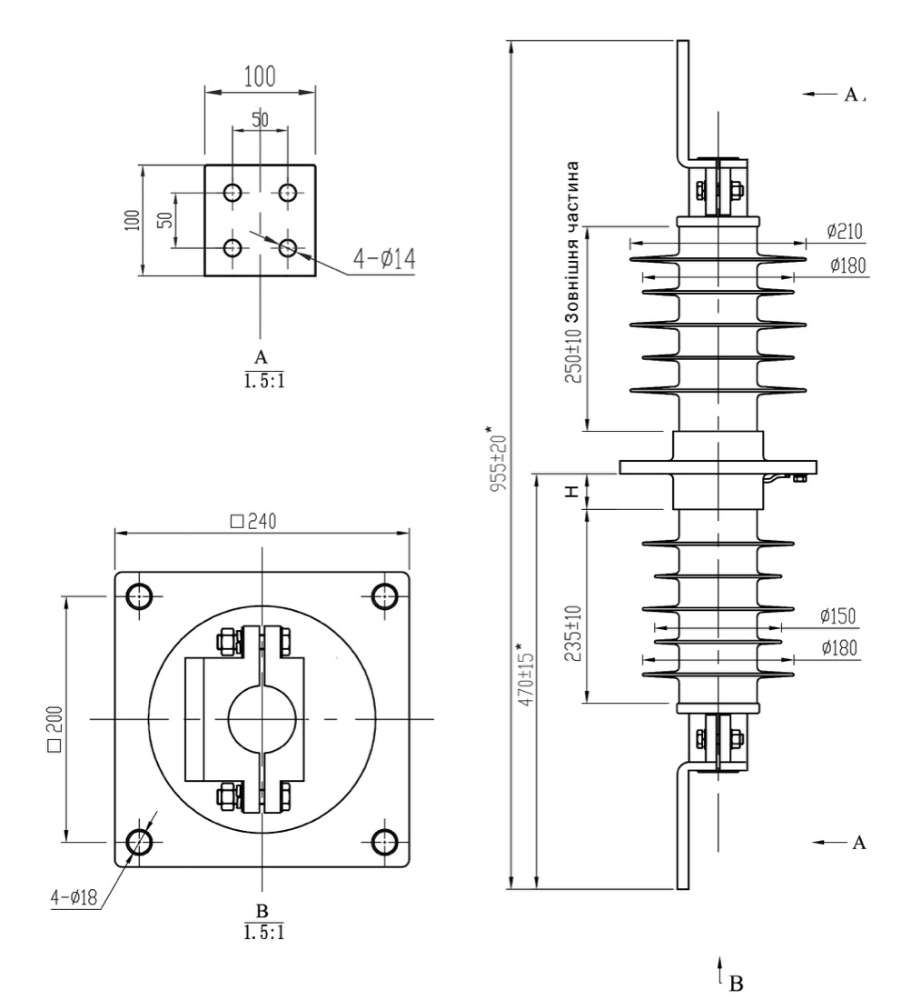

Прохідні ізолятори ППЦ, ИППУ
Полімерні прохідні ізолятори на 10, 20 і 35 кВ (630–4000 А) та лінійні вводи 110 кВ. Для введення та ізоляції струмовідних частин закритих розподільчих установок електричних станцій і підстанцій. Позицій: 19.
Прохідні ізолятори та вводи
Назва моделі — посилання на характеристики та креслення. Показані порцелянові ізолятори, які замінюють полімерні, та варіанти позначення полімерних аналогів.
| Модель | Напруга | Струм | Порцеляновий аналог (варіанти позначення) | Варіанти позначення полімерного аналога | Креслення |
|---|---|---|---|---|---|
| ППЦ-10/630-8 УХЛ1 овальний фланець | 10 кВ | 630 А | ИПУ-10/630-7,5-02 УХЛ1, ИПУ10/630-7,5 УХЛ1, ИПУ-10/630-I-7,5 УХЛ1, ИПУ-10/630-7.5 УХЛ1, ИПУ-10/630-7.5 УХЛ2, ИП-10/630-750 У1, ИП 10/630, ИП-10/1600-7,5 УХЛ, Т2, ІПУ-10/630-7,5 М УХЛ1 | ИПК 10/630-IV/II-А УХЛ1, ИПК 10/630-IV/II-АМ УХЛ1, ИПК 10/630-IV/II-Б УХЛ1, ИПК 10/630-IV/II-БМ УХЛ1, ИППУ-10/630-8 УХЛ1, ИППУ-10/630-8-01 УХЛ1 | 80.pdf |
| ППЦ-10/630-8 УХЛ1 виконання 01, квадратний фланець | 10 кВ | 630 А | ИПУ-10/630-7,5-02 УХЛ1, ИПУ10/630-7,5 УХЛ1, ИПУ-10/630-I-7,5 УХЛ1, ИПУ-10/630-7.5 УХЛ1, ИПУ-10/630-7.5 УХЛ2, ИП-10/630-750 У1, ИП 10/630, ИП-10/1600-7,5 УХЛ, Т2 ІПУ-10/630-7,5 М УХЛ1 | ИПК 10/630-IV/II-А УХЛ1, ИПК 10/630-IV/II-АМ УХЛ1, ИПК 10/630-IV/II-Б УХЛ1, ИПК 10/630-IV/II-БМ УХЛ1, ИППУ-10/630-8 УХЛ1, ИППУ-10/630-8-01 УХЛ1 | 80.pdf |
| ППЦ-10/630-12,5 УХЛ1 | 10 кВ | 630 А | ИПУ-10/630-12,5 УХЛ1, ИПУ-10/630-125 УХЛ1, ИПУ-10/630-12,5 УХЛ 1, ИПУ10/630-12,5 УХЛ1, ИПУ10/630-12,50 УХЛ1 ИП 10/630 | ИПК 10/1000-IV/II-А УХЛ1, ИПК 10/1000-IV/II-АМ УХЛ1, ИПК 10/1000-IV/II-Б УХЛ1, ИПК 10/1000-IV/II-БМ УХЛ1, ИППУ-10/630-12,5 УХЛ1, ИППУ-10/12,5-12,5-01 УХЛ1 | 81.pdf |
| ППЦ-10/1000-8 УХЛ1 | 10 кВ | 1000 А | ИПУ-10/1000-7,5 УХЛ1, ИПУ10/1000-7,5-02 УХЛ1, ИПУ-10/1000-7,5 УХЛ1, ИПУ10/1000-7,5-02УХЛ1, ПН-10-1000-750 У1, ПНУ-10-1000-750 У1, ИП-10/1000-7,5 У3, ИП 10/1000-7,5 УХЛ, Т2 | ИПК 10/1000-IV/II-А УХЛ1, ИПК 10/1000-IV/II-АМ УХЛ1, ИПК 10/1000-IV/II-Б УХЛ1, ИПК 10/1000-IV/II-БМ УХЛ1, ИППУ-10/1000-8 УХЛ1, ИППУ-10/1000-8-01 УХЛ1 | — |
| ППЦ-10/1000-12,5 УХЛ1 | 10 кВ | 1000 А | ИП-10/1000-12,5 У3, ИПУ-10/1000-12,50 УХЛ1, ИПУ-10/1000-1250 УХЛ1, ИПУ-10/1000-12,5 УХЛ 1, ИПУ10/1000-12,5 УХЛ1, ИПУ10/1000-12,50 УХЛ1, ИПУ-10/1000-12,5 УХЛ1 | ИППУ-10/1000-12,5 УХЛ1, ИППУ-10/1000-12,5-01 УХЛ1 | 82.pdf |
| ППЦ-10/2000-12,5 УХЛ1 | 10 кВ | 2000 А | ИПУ-10/2000-12,5 УХЛ 1, ИПУ-10/2000-12,50 УХЛ1, ИПУ-10/2000-1250 УХЛ1, ИПУ-10/2000-1250 УХЛ 1, ИП-10/2000-12,5 УХЛ1, ИПУ10/2000-12,5 УХЛ1, ИПУ10/2000-12,5УХЛ1 ПН-10-2000-1250 У1, ПНУ-10-2000-12,5 У1, ИП-10/2000-1250 У1, ПНБ-10/2000-1250 У1 | ИПК 10/2000-IV/IV УХЛ1, ИПК 10/2000-IV/IV-М УХЛ1, ИПК 10/2000-IV/IV УХЛ1, ИППУ-10/2000-12,5 УХЛ1, ИППУ-10/2000-12,5 УХЛ1 | 83.pdf |
| ППЦ-10/3150-12,5-01 УХЛ1 | 10 кВ | 3150 А | ИПУ-10/3150-12,5 УХЛ1, ИПУ-10/3150-12.5 УХЛ1, ИПУ10/3150-12,5 УХЛ1, ИПУ10/3150-12,5УХЛ1 ПНБ-10/3150-1250 У1, ПНУ-10-3150-12 У1, ИП-10/3150-1250 У1 | ИПК 10/3150-IV/IV УХЛ1, ИПК 10/3150-IV/IV УХЛ1, ИПК 10/3150-IV/IV УХЛ1, ИПК 10/3150-IV/IV-М УХЛ1, ИПК 10/3150-IV/IV-М УХЛ1, ИППУ-10/2000-12,5 УХЛ1, ИППУ-10/2000-12,5 УХЛ1 | PPC-10-3150-12,5.pdf |
| ИППУ-10/4000-30-А4 УХЛ1 | 10 кВ | 4000 А | ИПУ-10/4000-30 УХЛ1, ИПУ-10/4000-30 УХЛ1, ИПУ10/4000-12,5 УХЛ1, ИПУ10/4000-30УХЛ1 ПНБ-10/4000-30000 У1, ПНУ-10-4000-12 У1, ИП-10/4000-1250 У1 | ППЦ-10/4000-30 УХЛ1, ИПК-10/4000-30-А4 УХЛ 1 ИПК 10/4000-IV/IV УХЛ1 ИПК 10/4000-IV/IV-М УХЛ1 | IPPU-10-4000-30.pdf |
| ППЦ-10/4000-30 УХЛ1 | 10 кВ | 4000 А | — | ИПК 10/4000-IV/IV УХЛ1 ИПК 10/4000-IV/IV-М УХЛ1, ИПК 10/4000-IV/IV-М УХЛ1 ИППУ-10/4000-30 УХЛ1, ИППУ-10/4000-30-01 УХЛ1, ИППУ-10/4000-30-А4 УХЛ1 | PPC-10-4000-30.pdf |
| ППЦ-20/630-12,5 | 20 кВ | 630 А | — | — | — |
| ППЦ-20/2000-12,5 УХЛ1 | 20 кВ | 2000 А | ИП-20/2000-12,5 УХЛ1, ИП-20/2000-12.5 УХЛ1, ИП20/2000-12,5УХЛ1, ПН-20-2000-1250 У1, ПН-20-2000-12,5 У1, ИП-20/2000-1250 У1 | ИППУ-20/2000-12,5 УХЛ1 | — |
| ИППУ-20/3150-12,5 УХЛ1 | 20 кВ | 3150 А | ИП-20/3150-12.5 УХЛ1, ПН-20-3150-1250 У1, ПН-20-3150-12,5 У1, ІП-20/3150-12,5 УХЛ1, ИП20/3150-12,5УХЛ1, ИП-20/3150-12,5 УХЛ1, П-20/3150-12,5 УХЛ 1, ИП-20/3150-12,50 УХЛ 1, ІПУ-20/3150-12,5 УХЛ1, ИП20/3150-12,5 УХЛ1, ИПУ-20/3150-12,5 УХЛ1 | ІППУ-20/3150-12,5-01 УХЛ1, ППЦ-20/3150-01 УХЛ1, ИППУ-20/3150-01 УХЛ1, ИПК 20/3150-IV/IV-М УХЛ1, ИПК 20/3150-IV/IV-М УХЛ1, ИППУ-20/3150-12,5 УХЛ1, ИППУ-20/3150-12,5 УХЛ1, ИПК 20/4000-IV/IV УХЛ1, ИПК 20/4000-IV/IV УХЛ1, ИПК 20/4000-IV/IV УХЛ1, ИПК 20/4000-IV/IV-М УХЛ1, ИПК 20/4000-IV/IV-М УХЛ1, ИППУ-20/4000-12,5 УХЛ1, ИППУ-20/4000-12,5 УХЛ1 | — |
| ППЦ-20/4000-12,5 УХЛ1 | 20 кВ | 4000 А | ИП-20/3150-12.5 УХЛ1, ПН-20-3150-1250 У1, ПН-20-3150-12,5 У1, ИП-20/3150-1250 У1, ИП20/3150-12,5УХЛ1, ИП-20/3150-12,5 УХЛ1, П-20/3150-12,5 УХЛ 1, ИП-20/3150-12,50 УХЛ 1, ИП-20/3150-1250 УХЛ 1, ИП20/3150-12,5 УХЛ1, ИПУ-20/3150-12,5 УХЛ1 | ИПК 20/3150-IV/IV УХЛ1, ИПК 20/3150-IV/IV УХЛ1, ИПК 20/3150-IV/IV УХЛ1, ИПК 20/3150-IV/IV-М УХЛ1, ИПК 20/3150-IV/IV-М УХЛ1, ИППУ-20/3150-12,5 УХЛ1, ИППУ-20/3150-12,5 УХЛ1, ИПК 20/4000-IV/IV УХЛ1, ИПК 20/4000-IV/IV УХЛ1, ИПК 20/4000-IV/IV УХЛ1, ИПК 20/4000-IV/IV-М УХЛ1, ИПК 20/4000-IV/IV-М УХЛ1, ИППУ-20/4000-12,5 УХЛ1, ИППУ-20/4000-12,5 УХЛ1 | PPC-20-4000-12,5.pdf |
| ППЦ-35/630-8 УХЛ1 | 35 кВ | 630 А | ИП-35/630-7,5 УХЛ1, ИП-35/630-7,50 УХЛ1, ИП-35/630-750 УХЛ1, ИП-35/630-7,5 УХЛ 1, ИП35/630-7,5 УХЛ1, ИПУ-35/630-7,5 УХЛ1, ИП-35/400-7,5 УХЛ1, ИП-35/400-7,50 УХЛ1, ИП-35/400-750 УХЛ1, ИП-35/400-7,5 УХЛ 1, ИП35/400-7,5 УХЛ1, ИПУ-35/400-7,5 УХЛ1, ИП35/400-7,5УХЛ2, ИП-35/400-7,5 УХЛ2 | ИППУ-35/630-8 УХЛ1, ИППУ-35/630-8-01 УХЛ1, ИППУ-35/630-8-02 УХЛ1 | 84.pdf |
| ППЦ-35/1000-8 УХЛ1 | 35 кВ | 1000 А | ИП-35/1000-7,5 УХЛ1, ИП-35/1000-7,50 УХЛ1, ИП-35/1000-750 УХЛ1, ИП-35/1000-7,5 УХЛ 1, ИП35/1000-7,5 УХЛ1, ИПУ-35/1000-7,5 УХЛ1, ПН-35/1000-750 У1 | ИППУ-35/1000-8 УХЛ1 | 85.pdf |
| ППЦ-35/1600-8 УХЛ1 | 35 кВ | 1600 А | ИП-35/1600-7,50 УХЛ2, ИП-35/1600-750 УХЛ2, ИП-35/1600-7,5 УХЛ 2, ИП35/1600-7,5 УХЛ2, ИП-35/1600-7,50 УХЛ1, ИП-35/1600-750 УХЛ1, ИП-35/1600-7,5 УХЛ 1, ИП35/1600-7,5 УХЛ1, ИПУ-35/1600-7,5 УХЛ1 | ИППУ-35/1600-8 УХЛ1 | 86.pdf |
| ИППУ-35/3150-30 УХЛ1 | 35 кВ | 3150 А | ИП-35/3150-7,50 УХЛ1, ИП-35/3150-12,5 УХЛ1, ИП-35/3150-20 УХЛ1, ИП-35/3150-30 УХЛ 1, | ИППУ-35/3150-8 УХЛ1 ППЦ-35/3150-8 УХЛ1 ППЦ-35/3150-12,5 УХЛ1 | — |
| ИППУ-35/4000-30 УХЛ1 | 35 кВ | 4000 А | ИП-35/4000-7,50 УХЛ1, ИП-35/4000-12,5 УХЛ1, ИП-35/4000-20 УХЛ1, ИП-35/4000-30 УХЛ 1 | ИППУ-35/4000-8 УХЛ1 ППЦ-35/4000-8 УХЛ1 ППЦ-35/4000-12,5 УХЛ1 | — |
| Лінійні вводи 110 кВ повітря-повітря, FCRGW-110-800-2000 | 110 кВ | 800-2000 А | Ввід 110 кВ, Лінійний ввід 110 кВ, Ввід 110 кВ повітря-повітря, Сухий ввід 110 кВ | — | — |
Приєднувальні розміри можуть змінюватися на вимогу замовника. Якщо потрібної моделі немає у списку, зв'яжіться з нами — підберемо ізолятор.
Технічні характеристики
Розкрийте потрібну модель, щоб побачити параметри.
ППЦ-10/630-8 УХЛ110 кВ, 630 А, овальний фланець
Ізолятор прохідний полімерний ППЦ-10/630-8 УХЛ1 (овальний фланець), аналог керамічного ізолятора ИПУ-10/630-7,5 УХЛ1, ИПУ 10/630-7,5-I УХЛ1, призначений для введення та ізоляції струмовідних частин закритих розподільчих установок електричних станцій і підстанцій (ТП), комплектних розподільчих установок (КТП), з'єднання з відкритими розподільчими установками або лініями електропередачі змінної напруги 10 кВ частотою до 100 Гц, для роботи в атмосфері типів I або II за ГОСТ 15150-69, а також для закритих струмопроводів.
Ізолятор ППЦ 10/630-8 УХЛ1 застосовується для ремонту та комплектації трансформаторних підстанцій КТП потужністю до 100, 160, 200, 300, 400, 630 кВА.
Варіанти позначення полімерних аналогів: ИПК 10 630-IV II-А УХЛ1, ИПК 10 630-IV II-АМ УХЛ1, ИПК 10 630-IV II-Б УХЛ1, ИПК 10 630-IV II-БМ УХЛ1, ИППУ-10 630-8 УХЛ1, ИППУ-10 630-8-01 УХЛ1
Замінюють порцеляновий прохідний ізолятор: ИПУ-10 630-7,5-02 УХЛ1, ИПУ10 630-7,5 УХЛ1, ИПУ-10 630-I-7,5 УХЛ1, ИПУ-10 630-7.5 УХЛ1, ИПУ-10 630-7.5 УХЛ2, ИП-10 630-750 У1, ИП 10 630, ИП-10 1600-7,5 УХЛ, Т2, ІПУ-10 630-7,5 М УХЛ1, ИПУ-10 630-7,5М УХЛ1, ИПУ-10 630-7,5 I УХЛ1
| Показник | Од. вим. | ППЦ-10/630-8 УХЛ1 |
|---|---|---|
| Номінальна напруга | кВ | 10 |
| Номінальний струм | А | 630 |
| Нормована руйнівна механічна сила при вигині, не менше | кН | 8 |
| Витримувана напруга грозового імпульсу «1,2/50» | кВ | 80 |
| Витримувана напруга промислової частоти в сухому стані | кВ | 45 |
| Витримувана напруга промислової частоти під дощем | кВ | 30 |
| Витримувана напруга промислової частоти в забрудненому та зволоженому стані при питомій поверхневій провідності забрудненого шару (35±1,0) мкСм, не менше | кВ | 12 |
| Довжина шляху витоку зовнішньої ізоляції, не менше | мм | 380 |
| Довжина шляху витоку внутрішньої ізоляції, не менше | мм | 290 |
| Маса, не більше | кг | 4,2 |

ППЦ-10/630-8 УХЛ110 кВ, 630 А, виконання 01, квадратний фланець
Ізолятор прохідний ППЦ-10/630-8 УХЛ1 виконання 01 (квадратний фланець), аналог керамічного ізолятора ИПУ-10/630-7,5-02 УХЛ1, ИПУ 10/630-7,5-II УХЛ1, призначений для введення та ізоляції струмовідних частин закритих розподільчих установок електричних станцій і підстанцій (ТП), комплектних розподільчих установок (КТП), з'єднання з відкритими розподільчими установками або лініями електропередачі змінної напруги 10 кВ частотою до 100 Гц, для роботи в атмосфері типів I або II за ГОСТ 15150-69, а також для закритих струмопроводів.
Ізолятор ППЦ 10/630-8 УХЛ1 виконання 01 застосовується для ремонту та комплектації трансформаторних підстанцій КТП потужністю до 100, 160, 200, 300, 400, 630 кВА.
Варіанти позначення полімерних аналогів: ИПК 10 630-IV II-Б УХЛ1, ИПК 10 630-IV II-БМ УХЛ1, ИППУ-10 630-8-02 УХЛ1
Замінюють порцеляновий прохідний ізолятор: ИПУ-10 630-7,5-02 УХЛ1, ИПУ10 630-7,5 02 УХЛ1, ИПУ-10 630-II-7,5 УХЛ1
| Показник | Од. вим. | ППЦ-10/630-8 УХЛ1 |
|---|---|---|
| Номінальна напруга | кВ | 10 |
| Номінальний струм | А | 630 |
| Нормована руйнівна механічна сила при вигині, не менше | кН | 8 |
| Витримувана напруга грозового імпульсу «1,2/50» | кВ | 80 |
| Витримувана напруга промислової частоти в сухому стані | кВ | 45 |
| Витримувана напруга промислової частоти під дощем | кВ | 30 |
| Витримувана напруга промислової частоти в забрудненому та зволоженому стані при питомій поверхневій провідності забрудненого шару (35±1,0) мкСм, не менше | кВ | 12 |
| Довжина шляху витоку зовнішньої ізоляції, не менше | мм | 380 |
| Довжина шляху витоку внутрішньої ізоляції, не менше | мм | 290 |
| Маса, не більше | кг | 4,2 |

ППЦ-10/1000-8 УХЛ110 кВ, 1000 А
Ізолятор прохідний полімерний ППЦ-10/1000-8 УХЛ1, ППЦ-10/1000-8 УХЛ1 виконання 01, аналог керамічного ізолятора ИПУ-10/1000-7,5 УХЛ1, ИПУ 10/1000-7,5-02 УХЛ1, призначений для введення та ізоляції струмовідних частин закритих розподільчих установок електричних станцій і підстанцій (ТП), комплектних розподільчих установок (КТП), з'єднання з відкритими розподільчими установками або лініями електропередачі змінної напруги 10 кВ частотою до 100 Гц, для роботи в атмосфері типів I або II за ГОСТ 15150-69, а також для закритих струмопроводів.
Ізолятор ППЦ-10/1000-8 УХЛ1, ППЦ-10/1000-8 УХЛ1 виконання 01 застосовується для ремонту та комплектації трансформаторних підстанцій КТП 1000 кВА.
Варіанти позначення полімерних аналогів: ИПК 10 1000-IV II-А УХЛ1, ИПК 10 1000-IV II-АМ УХЛ1, ИПК 10 1000-IV II-Б УХЛ1, ИПК 10 1000-IV II-БМ УХЛ1, ИППУ-10 1000-8 УХЛ1, ИППУ-10 1000-8-01 УХЛ1
Замінюють порцеляновий прохідний ізолятор: ИПУ-10 1000-7,5 УХЛ1, ИПУ10 1000-7,5-02 УХЛ1, ИПУ-10 1000-7,5 УХЛ1, ИПУ10 1000-7,5-02УХЛ1, ПН-10-1000-750 У1, ПНУ-10-1000-750 У1, ИП-10 1000-7,5 У3, ИП 10 1000-7,5 УХЛ, Т2
| Показник | Од. вим. | ППЦ-10/1000-8 УХЛ1 |
|---|---|---|
| Номінальна напруга | кВ | 10 |
| Номінальний струм | А | 1000 |
| Нормована руйнівна механічна сила при вигині, не менше | кН | 8 |
| Витримувана напруга грозового імпульсу «1,2/50» | кВ | 80 |
| Витримувана напруга промислової частоти в сухому стані | кВ | 45 |
| Витримувана напруга промислової частоти під дощем | кВ | 30 |
| Витримувана напруга промислової частоти в забрудненому та зволоженому стані при питомій поверхневій провідності забрудненого шару (35±1,0) мкСм, не менше | кВ | 12 |
| Довжина шляху витоку зовнішньої ізоляції, не менше | мм | 380 |
| Довжина шляху витоку внутрішньої ізоляції, не менше | мм | 300 |
| Маса, не більше | кг | 4,2 |

—
ППЦ-10/1000-12,5 УХЛ110 кВ, 1000 А
Ізолятор прохідний полімерний ППЦ-10/1000-12,5 УХЛ1, аналог керамічного ізолятора ИПУ-10/1000-12,5 УХЛ1, ИП-10/1000-12,5 У3, призначений для введення та ізоляції струмовідних частин закритих розподільчих установок електричних станцій і підстанцій (ТП), комплектних розподільчих установок (КТП), з'єднання з відкритими розподільчими установками або лініями електропередачі змінної напруги 10 кВ частотою до 100 Гц, для роботи в атмосфері типів I або II за ГОСТ 15150-69, а також для закритих струмопроводів.
Ізолятор ППЦ-10/1000-12,5 УХЛ1 застосовується для ремонту та комплектації трансформаторних підстанцій КТП до 1000 кВА.
Варіанти позначення полімерних аналогів: ИППУ-10 1000-12,5 УХЛ1, ИППУ-10 1000-12,5-01 УХЛ1
Замінюють порцеляновий прохідний ізолятор: ИП-10 1000-12,5 У3, ИПУ-10 1000-12,5 УХЛ1, ИПУ-10 1000-1250 УХЛ1, ИПУ-10 1000-12,5 УХЛ 1, ИПУ10 1000-12,5 УХЛ1, ИПУ10 1000-12,50 УХЛ1, ИПУ-10 1000-12,5 УХЛ1
| Показник | Од. вим. | ППЦ-10/1000-12,5 УХЛ1 |
|---|---|---|
| Номінальна напруга | кВ | 10 |
| Номінальний струм | А | 1000 |
| Нормована руйнівна механічна сила при вигині, не менше | кН | 12,5 |
| Витримувана напруга грозового імпульсу «1,2/50» | кВ | 80 |
| Витримувана напруга промислової частоти в сухому стані | кВ | 45 |
| Витримувана напруга промислової частоти під дощем | кВ | 30 |
| Витримувана напруга промислової частоти в забрудненому та зволоженому стані при питомій поверхневій провідності забрудненого шару (35±1,0) мкСм, не менше | кВ | 12 |
| Довжина шляху витоку зовнішньої ізоляції, не менше | мм | 380 |
| Довжина шляху витоку внутрішньої ізоляції, не менше | мм | 290 |
| Маса, не більше | кг | 4,9 |

ППЦ-10/2000-12,5 УХЛ110 кВ, 2000 А
Ізолятор прохідний полімерний ППЦ-10/2000-12,5 УХЛ1, аналог керамічного ізолятора ИПУ-10/2000-12,5 УХЛ1, ИП-10/2000-12,5 У3, призначений для введення та ізоляції струмовідних частин закритих розподільчих установок електричних станцій і підстанцій (ТП), комплектних розподільчих установок (КТП), з'єднання з відкритими розподільчими установками або лініями електропередачі змінної напруги 10 кВ частотою до 100 Гц, для роботи в атмосфері типів I або II за ГОСТ 15150-69, а також для закритих струмопроводів.
Ізолятор ППЦ-10/2000-12,5 УХЛ1 застосовується для ремонту та комплектації трансформаторних підстанцій КТП до 2000 кВА.
Варіанти позначення полімерних аналогів: ИПК 10 2000-IV IV УХЛ1, ИПК 10 2000-IV IV-М УХЛ1, ИПК 10 2000-IV IV УХЛ1, ИППУ-10 2000-12,5 УХЛ1, ИППУ-10 2000-12,5 УХЛ1
Замінюють порцеляновий прохідний ізолятор: ИПУ-10 2000-12,5 УХЛ 1, ИПУ-10 2000-12,50 УХЛ1, ИПУ-10 2000-1250 УХЛ1, ИПУ-10 2000-1250 УХЛ 1, ИП-10 2000-12,5 УХЛ1, ИПУ10 2000-12,5 УХЛ1, ИПУ10 2000-12,5УХЛ1, ПН-10-2000-1250 У1, ПНУ-10-2000-12,5 У1, ИП-10 2000-1250 У1, ПНБ-10 2000-1250 У1
| Показник | Од. вим. | ППЦ-10/2000-12,5 УХЛ1 |
|---|---|---|
| Номінальна напруга | кВ | 10 |
| Номінальний струм | А | 2000 |
| Нормована руйнівна механічна сила при вигині, не менше | кН | 12,5 |
| Витримувана напруга грозового імпульсу «1,2/50» | кВ | 80 |
| Витримувана напруга промислової частоти в сухому стані | кВ | 45 |
| Витримувана напруга промислової частоти під дощем | кВ | 30 |
| Витримувана напруга промислової частоти в забрудненому та зволоженому стані при питомій поверхневій провідності забрудненого шару (35±1,0) мкСм, не менше | кВ | 12 |
| Довжина шляху витоку зовнішньої ізоляції, не менше | мм | 560 |
| Довжина шляху витоку внутрішньої ізоляції, не менше | мм | 350 |
| Маса, не більше | кг | 10,3 |

ППЦ-10/3150-12,5-01 УХЛ110 кВ, 3150 А
Ізолятор прохідний полімерний ППЦ-10/3150-12,5 УХЛ1, аналог керамічного ізолятора ИПУ-10/3150-12,5 УХЛ1, ИП-10/3150-12,5 У3, призначений для введення та ізоляції струмовідних частин закритих розподільчих установок електричних станцій і підстанцій (ТП), комплектних розподільчих установок (КТП), з'єднання з відкритими розподільчими установками або лініями електропередачі змінної напруги 10 кВ частотою до 100 Гц, для роботи в атмосфері типів I або II за ГОСТ 15150-69, а також для закритих струмопроводів.
Ізолятор ППЦ-10/3150-12,5 УХЛ1 застосовується для ремонту та комплектації трансформаторних підстанцій КТП до 3150 кВА.
Варіанти позначення полімерних аналогів: ИПК 10 3150-IV IV УХЛ1, ИПК 10 3150-IV IV УХЛ1, ИПК 10 3150-IV IV УХЛ1, ИПК 10 3150-IV IV-М УХЛ1, ИПК 10 3150-IV IV-М УХЛ1, ИППУ-10 2000-12,5 УХЛ1, ИППУ-10 2000-12,5 УХЛ1
Замінюють порцеляновий прохідний ізолятор: ИПУ-10 3150-12,5 УХЛ1, ИПУ-10 3150-12.5 УХЛ1, ИПУ10 3150-12,5 УХЛ1, ИПУ10 3150-12,5УХЛ1, ПНБ-10 3150-1250 У1, ПНУ-10-3150-12 У1, ИП-10 3150-1250 У1
| Показник | Од. вим. | ППЦ-10/3150-12,5-01 УХЛ1 |
|---|---|---|
| Номінальна напруга | кВ | 10 |
| Номінальний струм | А | 3150 |
| Нормована руйнівна механічна сила при вигині, не менше | кН | 12,5 |
| Витримувана напруга грозового імпульсу «1,2/50» | кВ | 80 |
| Витримувана напруга промислової частоти в сухому стані | кВ | 45 |
| Витримувана напруга промислової частоти під дощем | кВ | 30 |
| Витримувана напруга промислової частоти в забрудненому та зволоженому стані при питомій поверхневій провідності забрудненого шару (35±1,0) мкСм, не менше | кВ | 12 |
| Довжина шляху витоку зовнішньої ізоляції, не менше | мм | 580 |
| Довжина шляху витоку внутрішньої ізоляції, не менше | мм | 370 |
| Матеріал шин і струмопроводу | — | Мідь |
| Маса, не більше | кг | 23,2 |

ИППУ-10/4000-30-А4 УХЛ110 кВ, 4000 А
Варіанти позначення полімерних аналогів: ИППС-10 3150-20 УХЛ1, ИППС-10 4000-20 УХЛ1. ИППУ-10 4000-12,5-А4 УХЛ 1 , ИПК 10 4000-IV IV УХЛ1 виконання 1, ИПК 10 4000-IV IV-М УХЛ1, ИПК 10 4000-IV IV-М УХЛ1 виконання 1, ИППУ-10 4000-30 УХЛ1, ИППУ-10 4000-30-01 УХЛ1, ИППУ-10 4000-30-А4 УХЛ1, ППЦ-10 4000-30 УХЛ1
Замінюють порцеляновий прохідний ізолятор: ИПУ-10 4000-30 УХЛ1, ИПУ-10 4000-30 УХЛ1, ИПУ10 4000-30 УХЛ1, ИПУ10 4000-30УХЛ1, ПНБ-10 4000-3000 У1, ПНУ-10-4000-30 У1, ИП-10 4000-30000 У1
| Показник | Од. вим. | ИППУ-10/4000-30-А4 УХЛ1 |
|---|---|---|
| Номінальна напруга | кВ | 10 |
| Номінальний струм | А | 4000 |
| Нормована руйнівна механічна сила при вигині, не менше | кН | 12,5 |
| Витримувана напруга грозового імпульсу «1,2/50» | кВ | 80 |
| Витримувана напруга промислової частоти в сухому стані | кВ | 45 |
| Витримувана напруга промислової частоти під дощем | кВ | 30 |
| Витримувана напруга промислової частоти в забрудненому та зволоженому стані при питомій поверхневій провідності забрудненого шару (35±1,0) мкСм, не менше | кВ | 12 |
| Довжина шляху витоку зовнішньої ізоляції, не менше | мм | 680 |
| Довжина шляху витоку внутрішньої ізоляції, не менше | мм | 660 |
| Товщина перешкоди (вказується при замовленні) | мм | H |
| Матеріал шин і струмопроводу | — | Мідь |
| Маса, не більше | кг | 34,5 |

ППЦ-10/4000-30 УХЛ110 кВ, 4000 А
Ізолятор прохідний полімерний ППЦ-10/4000-30 УХЛ1, аналог керамічного ізолятора ИПУ-10/4000-30 УХЛ1, ИП-10/4000-30 У3, призначений для введення та ізоляції струмовідних частин закритих розподільчих установок електричних станцій і підстанцій (ТП), комплектних розподільчих установок (КТП), з'єднання з відкритими розподільчими установками або лініями електропередачі змінної напруги 10 кВ частотою до 100 Гц, для роботи в атмосфері типів I або II за ГОСТ 15150-69, а також для закритих струмопроводів.
Ізолятор ППЦ-10/4000-30 УХЛ1 застосовується для ремонту та комплектації трансформаторних підстанцій КТП до 4000 кВА.
Варіанти позначення полімерних аналогів: ИПК 10 4000-IV IV УХЛ1 виконання 1, ИПК 10 4000-IV IV-М УХЛ1, ИПК 10 4000-IV IV-М УХЛ1 виконання 1, ИППУ-10 4000-30 УХЛ1, ИППУ-10 4000-30-01 УХЛ1, ИППУ-10 4000-30-А4 УХЛ1
Замінюють порцеляновий прохідний ізолятор: ИПУ-10 4000-30 УХЛ1, ИПУ-10 4000-30 УХЛ1, ИПУ10 4000-30 УХЛ1, ИПУ10 4000-30УХЛ1, ПНБ-10 4000-3000 У1, ПНУ-10-4000-30 У1, ИП-10 4000-30000 У1
| Показник | Од. вим. | ППЦ-10/4000-30 УХЛ1 |
|---|---|---|
| Номінальна напруга | кВ | 10 |
| Номінальний струм | А | 4000 |
| Нормована руйнівна механічна сила при вигині, не менше | кН | 30 |
| Витримувана напруга грозового імпульсу «1,2/50» | кВ | 80 |
| Витримувана напруга промислової частоти в сухому стані | кВ | 45 |
| Витримувана напруга промислової частоти під дощем | кВ | 30 |
| Витримувана напруга промислової частоти в забрудненому та зволоженому стані при питомій поверхневій провідності забрудненого шару (35±1,0) мкСм, не менше | кВ | 12 |
| Довжина шляху витоку зовнішньої ізоляції, не менше | мм | 800 |
| Довжина шляху витоку внутрішньої ізоляції, не менше | мм | 800 |
| Матеріал шин і струмопроводу | — | Мідь |
| Маса, не більше | кг | 34,5 |

ППЦ-20/2000-12,5 УХЛ120 кВ, 2000 А
Ізолятор прохідний полімерний ППЦ-20/2000-12,5 УХЛ1, аналог керамічного ізолятора ИПУ-20/2000-12,5 УХЛ1, ИП-20/2000-12,5 У3, призначений для введення та ізоляції струмовідних частин закритих розподільчих установок електричних станцій і підстанцій (ТП), комплектних розподільчих установок (КТП), з'єднання з відкритими розподільчими установками або лініями електропередачі змінної напруги 20 кВ частотою до 100 Гц, для роботи в атмосфері типів I або II за ГОСТ 15150-69, а також для закритих струмопроводів.
Ізолятор ППЦ-20/2000-12,5 УХЛ1 застосовується для ремонту та комплектації трансформаторних підстанцій КТП до 2000 кВА.
Варіанти позначення полімерних аналогів: ИПК 20 2000-IV IV УХЛ1, ИПК 20 2000-IV IV-М УХЛ1, ИПК 20 2000-IV IV УХЛ1, ИППУ-20 2000-12,5 УХЛ1, ИППУ-20 2000-12,5 УХЛ1
Замінюють порцеляновий прохідний ізолятор: ИП-20 2000-12,5 УХЛ1, ИП-20 2000-12.5 УХЛ1, ИП20 2000-12,5УХЛ1, ПН-20-2000-1250 У1, ПН-20-2000-12,5 У1, ИП-20 2000-1250 У1
| Показник | Од. вим. | ППЦ-20/2000-12,5 УХЛ1 |
|---|---|---|
| Номінальна напруга | кВ | 20 |
| Номінальний струм | А | 2000 |
| Нормована руйнівна механічна сила при вигині, не менше | кН | 12,5 |
| Витримувана напруга грозового імпульсу «1,2/50» | кВ | 125 |
| Витримувана напруга промислової частоти в сухому стані | кВ | 65 |
| Витримувана напруга промислової частоти під дощем | кВ | 50 |
| Витримувана напруга промислової частоти в забрудненому та зволоженому стані при питомій поверхневій провідності забрудненого шару (35±1,0) мкСм, не менше | кВ | 26 |
| Довжина шляху витоку зовнішньої ізоляції, не менше | мм | 800 |
| Довжина шляху витоку внутрішньої ізоляції, не менше | мм | 800 |
| Маса, не більше | кг | 21,5 |

—
ИППУ-20/3150-12,5 УХЛ120 кВ, 3150 А
Прохідний ізолятор ИППУ-20/3150-12,5 УХЛ1 аналог керамічного ізолятора ИП-20/3150-12,5 УХЛ1, ИП-20/3150-20 УХЛ1, ИП-20/3150-30 УХЛ1, призначений для введення та ізоляції струмовідних частин закритих розподільчих установок електричних станцій і підстанцій (ТП), комплектних розподільчих установок (КТП), з'єднання з відкритими розподільчими установками або лініями електропередачі змінної напруги 30 кВ частотою до 100 Гц, для роботи в атмосфері типів I або II, а також для закритих струмопроводів.
Варіанти позначення полімерних аналогів: ИП-20 3150-12,5 УХЛ1, ИПУ-20 3150-12,5 УХЛ, ИППУ-20 3150-12,5 УХЛ1, ІППУ-20 3150-12,5-01, ППЦ-20 3150-12,5 УХЛ1, ППЦ-20 3150-12,5-01 УХЛ1, ІППУ-20 3150-20 УХЛ1, ІППУ-20 3150-20-01 УХЛ1, ІП-20 3150-20 УХЛ1
| Показник | Од. вим. | ИППУ-20/3150-12,5 УХЛ1 |
|---|---|---|
| Клас напруги мережі | кВ | 20 |
| Номінальна напруга | кВ | 24 |
| Нормована руйнівна механічна сила при вигині, не менше | кН | 8, 12,5, 20 |
| Витримувана напруга грозового імпульсу «1,2/50» | кВ | 125 |
| Витримувана напруга промислової частоти в сухому стані | кВ | 50 |
| Пропускна здатність | А | 3150 |
| Довжина шляху витоку зовнішньої/внутрішньої ізоляції, не менше | мм | 750/570 |
| Висота встановлення над рівнем моря, не більше | м | 1000 |
| Маса, не більше | кг | залежить від конфігурації |
| Район за ступенем забрудненості атмосфери (СЗА) | — | IV |
| Код УКТ ВЭД | — | 8546 |
H стандартно 43 мм. На вимогу замовника цей розмір може бути збільшений до 1400мм.
* залежить від Н

—
ППЦ-20/4000-12,5 УХЛ120 кВ, 4000 А
Ізолятор прохідний полімерний ППЦ-20/4000-12,5 УХЛ1, аналог керамічного ізолятора ИПУ-20/3150-12,5 УХЛ1, ИП-20/3150-12,5 У3, ИПУ-20/4000-12,5 УХЛ1, ИП-20/4000 У3, призначений для введення та ізоляції струмовідних частин закритих розподільчих установок електричних станцій і підстанцій (ТП), комплектних розподільчих установок (КТП), з'єднання з відкритими розподільчими установками або лініями електропередачі змінної напруги 20 кВ частотою до 100 Гц, для роботи в атмосфері типів I або II за ГОСТ 15150-69, а також для закритих струмопроводів.
Ізолятор ППЦ-20/4000-12,5 УХЛ1 застосовується для ремонту та комплектації трансформаторних підстанцій КТП до 4000 кВА.
Варіанти позначення полімерних аналогів: ИПК 20 3150-IV IV УХЛ1, ИПК 20 3150-IV IV УХЛ1, ИПК 20 3150-IV IV УХЛ1, ИПК 20 3150-IV IV-М УХЛ1, ИПК 20 3150-IV IV-М УХЛ1, ИППУ-20 3150-12,5 УХЛ1, ИППУ-20 3150-12,5 УХЛ1, ИПК 20 4000-IV IV УХЛ1, ИПК 20 4000-IV IV УХЛ1, ИПК 20 4000-IV IV УХЛ1, ИПК 20 4000-IV IV-М УХЛ1, ИПК 20 4000-IV IV-М УХЛ1, ИППУ-20 4000-12,5 УХЛ1, ИППУ-20 4000-12,5 УХЛ1
Замінюють порцеляновий прохідний ізолятор: ИП-20 3150-12.5 УХЛ1, ПН-20-3150-1250 У1, ПН-20-3150-12,5 У1, ИП-20 3150-1250 У1, ИП20 3150-12,5УХЛ1, ИП-20 3150-12,5 УХЛ1, П-20 3150-12,5 УХЛ 1, ИП-20 3150-12,50 УХЛ 1, ИП-20 3150-1250 УХЛ 1, ИП20 3150-12,5 УХЛ1, ИПУ-20 3150-12,5 УХЛ1, ИП-20 4000-12.5 УХЛ1, ПН-20-4000-1250 У1, ПН-20-4000-12,5 У1, ИП-20 4000-1250 У1, ИП20 4000-12,5УХЛ1, ИП-20 4000-12,5 УХЛ1, П-20 4000-12,5 УХЛ 1, ИП-20 4000-12,50 УХЛ 1, ИП-20 4000-1250 УХЛ 1, ИП20 4000-12,5 УХЛ1, ИПУ-20 4000-12,5 УХЛ1
| Показник | Од. вим. | ППЦ-20/4000-12,5 УХЛ1 |
|---|---|---|
| Номінальна напруга | кВ | 20 |
| Номінальний струм | А | 4000 |
| Нормована руйнівна механічна сила при вигині, не менше | кН | 12,5 |
| Витримувана напруга грозового імпульсу «1,2/50» | кВ | 125 |
| Витримувана напруга промислової частоти в сухому стані | кВ | 65 |
| Витримувана напруга промислової частоти під дощем | кВ | 50 |
| Витримувана напруга промислової частоти в забрудненому та зволоженому стані при питомій поверхневій провідності забрудненого шару (35±1,0) мкСм, не менше | кВ | 26 |
| Довжина шляху витоку зовнішньої ізоляції, не менше | мм | 800 |
| Довжина шляху витоку внутрішньої ізоляції, не менше | мм | 800 |
| Матеріал шин і струмопроводу | — | Мідь |
| Маса, не більше | кг | 34,5 |

ППЦ-35/630-8 УХЛ135 кВ, 630 А
Ізолятор прохідний полімерний ППЦ-35/630-8 УХЛ1, аналог керамічного ізолятора ИПУ-35/630-7,5 УХЛ1, ИПУ 35/630-7,5-I УХЛ1, призначений для введення та ізоляції струмовідних частин закритих розподільчих установок електричних станцій і підстанцій (ТП), комплектних розподільчих установок (КТП), з'єднання з відкритими розподільчими установками або лініями електропередачі змінної напруги 35 кВ частотою до 100 Гц, для роботи в атмосфері типів I або II за ГОСТ 15150-69, а також для закритих струмопроводів.
Ізолятор ППЦ 35/630-8 УХЛ1 застосовується для ремонту та комплектації трансформаторних підстанцій КТП потужністю до 100, 160, 200, 300, 400, 630 кВА.
Варіанти позначення полімерних аналогів: ИППУ-35 630-8 УХЛ1, ИППУ-35 630-8-01 УХЛ1, ИППУ-35 630-8-02 УХЛ1
Замінюють порцеляновий прохідний ізолятор: ИП-35 630-7,5 УХЛ1, ИП-35 630-7,50 УХЛ1, ИП-35 630-750 УХЛ1, ИП-35 630-7,5 УХЛ 1, ИП35 630-7,5 УХЛ1, ИПУ-35 630-7,5 УХЛ1, ИП-35 400-7,5 УХЛ1, ИП-35 400-7,50 УХЛ1, ИП-35 400-750 УХЛ1, ИП-35 400-7,5 УХЛ 1, ИП35 400-7,5 УХЛ1, ИПУ-35 400-7,5 УХЛ1, ИП35 400-7,5УХЛ2, ИП-35 400-7,5 УХЛ2
| Показник | Од. вим. | ППЦ-35/630-8 УХЛ1 |
|---|---|---|
| Номінальна напруга | кВ | 35 |
| Номінальний струм | А | 630 |
| Нормована руйнівна механічна сила при вигині, не менше | кН | 8 |
| Витримувана напруга грозового імпульсу «1,2/50» | кВ | 190 |
| Витримувана напруга промислової частоти в сухому стані | кВ | 95 |
| Витримувана напруга промислової частоти під дощем | кВ | 80 |
| Витримувана напруга промислової частоти в забрудненому та зволоженому стані при питомій поверхневій провідності забрудненого шару (35±1,0) мкСм, не менше | кВ | 42 |
| Довжина шляху витоку зовнішньої ізоляції, не менше | мм | 1200 |
| Довжина шляху витоку внутрішньої ізоляції, не менше | мм | 1000 |
| Маса, не більше | кг | 14,8 |

ППЦ-35/1000-8 УХЛ135 кВ, 1000 А
Ізолятор прохідний полімерний ППЦ-35/1000-8 УХЛ1, аналог керамічного ізолятора ИПУ-35/1000-7,5 УХЛ1, ИПУ 35/1000-7,5-I УХЛ1, призначений для введення та ізоляції струмовідних частин закритих розподільчих установок електричних станцій і підстанцій (ТП), комплектних розподільчих установок (КТП), з'єднання з відкритими розподільчими установками або лініями електропередачі змінної напруги 35 кВ частотою до 100 Гц, для роботи в атмосфері типів I або II за ГОСТ 15150-69, а також для закритих струмопроводів.
Ізолятор ППЦ 35/1000-8 УХЛ1 застосовується для ремонту та комплектації трансформаторних підстанцій КТП потужністю до 1000 кВА.
Варіанти позначення полімерних аналогів: ИППУ-35 1000-8 УХЛ1, ИППУ-35 1000-8-01 УХЛ1, ИППУ-35 1000-8-02 УХЛ1
Замінюють порцеляновий прохідний ізолятор: ИП-35 1000-7,5 УХЛ1, ИП-35 1000-7,50 УХЛ1, ИП-35 1000-750 УХЛ1, ИП-35 1000-7,5 УХЛ 1, ИП35 1000-7,5 УХЛ1, ИПУ-35 1000-7,5 УХЛ1, ИП-35 1000-7,5 УХЛ1, ИП-35 1000-7,50 УХЛ1, ИП-35 1000-750 УХЛ1, ИП-35 1000-7,5 УХЛ 1, ИП35 1000-7,5 УХЛ1, ИПУ-35 1000-7,5 УХЛ1, ИП35 1000-7,5УХЛ2, ИП-35 1000-7,5 УХЛ2
| Показник | Од. вим. | ППЦ-35/1000-8 УХЛ1 |
|---|---|---|
| Номінальна напруга | кВ | 35 |
| Номінальний струм | А | 1000 |
| Нормована руйнівна механічна сила при вигині, не менше | кН | 8 |
| Витримувана напруга грозового імпульсу «1,2/50» | кВ | 190 |
| Витримувана напруга промислової частоти в сухому стані | кВ | 95 |
| Витримувана напруга промислової частоти під дощем | кВ | 80 |
| Витримувана напруга промислової частоти в забрудненому та зволоженому стані при питомій поверхневій провідності забрудненого шару (35±1,0) мкСм, не менше | кВ | 42 |
| Довжина шляху витоку зовнішньої ізоляції, не менше | мм | 1200 |
| Довжина шляху витоку внутрішньої ізоляції, не менше | мм | 1000 |
| Маса, не більше | кг | 14,8 |
ППЦ-35/1600-8 УХЛ135 кВ, 1600 А
Ізолятор прохідний полімерний ППЦ-35/1600-8 УХЛ1, аналог керамічного ізолятора ИПУ-35/1600-7,5 УХЛ1, ИПУ 35/1600-7,5-I УХЛ1, призначений для введення та ізоляції струмовідних частин закритих розподільчих установок електричних станцій і підстанцій (ТП), комплектних розподільчих установок (КТП), з'єднання з відкритими розподільчими установками або лініями електропередачі змінної напруги 35 кВ частотою до 100 Гц, для роботи в атмосфері типів I або II за ГОСТ 15150-69, а також для закритих струмопроводів.
Ізолятор ППЦ 35/1600-8 УХЛ1 застосовується для ремонту та комплектації трансформаторних підстанцій КТП потужністю до 1600 кВА.
Варіанти позначення полімерних аналогів: ИППУ-35 1600-8 УХЛ1, ИППУ-35 1600-8-01 УХЛ1, ИППУ-35 1600-8-02 УХЛ1
Замінюють порцеляновий прохідний ізолятор: ИП-35 1600-7,5 УХЛ1, ИП-35 1600-7,50 УХЛ1, ИП-35 1600-750 УХЛ1, ИП-35 1600-7,5 УХЛ 1, ИП35 1600-7,5 УХЛ1, ИПУ-35 1600-7,5 УХЛ1, ИП-35 1600-7,5 УХЛ1, ИП-35 1600-7,50 УХЛ1, ИП-35 1600-750 УХЛ1, ИП-35 1600-7,5 УХЛ 1, ИП35 1600-7,5 УХЛ1, ИПУ-35 1600-7,5 УХЛ1, ИП35 1600-7,5УХЛ2, ИП-35 1600-7,5 УХЛ2
| Показник | Од. вим. | ППЦ-35/1600-8 УХЛ1 |
|---|---|---|
| Номінальна напруга | кВ | 35 |
| Номінальний струм | А | 1600 |
| Нормована руйнівна механічна сила при вигині, не менше | кН | 8 |
| Витримувана напруга грозового імпульсу «1,2/50» | кВ | 190 |
| Витримувана напруга промислової частоти в сухому стані | кВ | 95 |
| Витримувана напруга промислової частоти під дощем | кВ | 80 |
| Витримувана напруга промислової частоти в забрудненому та зволоженому стані при питомій поверхневій провідності забрудненого шару (35±1,0) мкСм, не менше | кВ | 42 |
| Довжина шляху витоку зовнішньої ізоляції, не менше | мм | 1200 |
| Довжина шляху витоку внутрішньої ізоляції, не менше | мм | 1000 |
| Маса, не більше | кг | 14,8 |
ИППУ-35/3150-30 УХЛ135 кВ, 3150 А
Прохідний ізолятор ИППУ-35/3150-30 УХЛ1 аналог керамічного ізолятора ИП-35/3150-12,5 УХЛ1, ИП-35/3150-20 УХЛ1, ИП-35/3150-30 УХЛ1, призначений для введення та ізоляції струмовідних частин закритих розподільчих установок електричних станцій і підстанцій (ТП), комплектних розподільчих установок (КТП), з'єднання з відкритими розподільчими установками або лініями електропередачі змінної напруги 30 кВ частотою до 100 Гц, для роботи в атмосфері типів I або II, а також для закритих струмопроводів.
Варіанти позначення полімерних аналогів: ИППС-35 3150-20 УХЛ1, ИП-35 3150-12,5 УХЛ1, ИПУ-35 3150-7,5 УХЛ, ИППУ-35 3150-12,5 УХЛ1, ИППУ-35 3150-20 УХЛ1, ППЦ-35 3150-12,5 УХЛ1, ІППУ-35 3150-20 УХЛ1, ППЦ-35 3150-20 УХЛ1, ІП-35 3150-20 УХЛ1
| Показник | Од. вим. | ИППУ-35/3150-30 УХЛ1 |
|---|---|---|
| Клас напруги мережі | кВ | 35 |
| Номінальна напруга | кВ | 40,5 |
| Нормована руйнівна механічна сила при вигині, не менше | кН | 8, 12,5, 20, 30 |
| Витримувана напруга грозового імпульсу «1,2/50» | кВ | 200 |
| Витримувана напруга промислової частоти в сухому стані | кВ | 95 |
| Пропускна здатність | А | 3150 |
| Довжина шляху витоку зовнішньої/внутрішньої ізоляції, не менше | мм | 1260/810 |
| Необхідна довжина прохідної частини H | мм | 10-1600 |
| Маса, не більше | кг | залежить від конфігурації |
| Район за ступенем забрудненості атмосфери (СЗА) | — | IV |
| Код УКТ ВЭД | — | 8546 |
На вимогу замовника є можливість зміни приєднувальних розмірів.

—
ИППУ-35/4000-30 УХЛ135 кВ, 4000 А
Прохідний ізолятор ИППУ-35/4000-30 УХЛ1 аналог керамічного ізолятора ИП-35/4000-12,5 УХЛ1, ИП-35/4000-20 УХЛ1, ИП-35/4000-30 УХЛ1, призначений для введення та ізоляції струмовідних частин закритих розподільчих установок електричних станцій і підстанцій (ТП), комплектних розподільчих установок (КТП), з'єднання з відкритими розподільчими установками або лініями електропередачі змінної напруги 30 кВ частотою до 100 Гц, для роботи в атмосфері типів I або II, а також для закритих струмопроводів.
Варіанти позначення полімерних аналогів: ИППС-10 4000-20 УХЛ1, ИП-35 4000-7,5 УХЛ1, ИПУ-35 4000-7,5 УХЛ, ИППУ-35 4000-12,5 УХЛ1, ИППУ-35 4000-20 УХЛ1, ППЦ-35 4000-12,5 УХЛ1, ППЦ-35 4000-20 УХЛ1
| Показник | Од. вим. | ИППУ-35/4000-30 УХЛ1 |
|---|---|---|
| Клас напруги мережі | кВ | 35 |
| Номінальна напруга | кВ | 40,5 |
| Нормована руйнівна механічна сила при вигині, не менше | кН | 8, 12,5, 20, 30 |
| Витримувана напруга грозового імпульсу «1,2/50» | кВ | 200 |
| Витримувана напруга промислової частоти в сухому стані | кВ | 95 |
| Пропускна здатність | А | 4000 |
| Довжина шляху витоку зовнішньої/внутрішньої ізоляції, не менше | мм | 1260/810 |
| Необхідна довжина прохідної частини H | мм | 10-1600 |
| Маса, не більше | кг | залежить від конфігурації |
| Район за ступенем забрудненості атмосфери (СЗА) | — | IV |
| Код УКТ ВЭД | — | 8546 |
На вимогу замовника є можливість зміни приєднувальних розмірів.

—
Лінійні вводи 110 кВ110 кВ, 800-2000 А, повітря-повітря, FCRGW-110-800-2000
Варіанти позначення полімерних аналогів: FCRG–126 2000, FCRG–126 1000, FCRG–126 1250, FCRG–126 800, FCRG–123 2000, FCRG–123 1000, FCRG–123 1250, FCRG–123 800, FCRG1–126 2000, FCRG1–126 1000, FCRG1–126 1250, FCRG1–126 800, FCRG1–123 2000, FCRG1–123 1000, FCRG1–123 1250, FCRG1–123 800,
| Показник | Од. вим. | Лінійні вводи 110 кВ |
|---|---|---|
| Клас напруги мережі | кВ | 110 |
| Номінальна напруга | кВ | 123 |
| Нормована руйнівна механічна сила при вигині, не менше | кН | 4 |
| Витримувана напруга грозового імпульсу «1,2/50» | кВ | 550 |
| Витримувана напруга промислової частоти в сухому стані | кВ | 230 |
| Пропускна здатність | А | 630-2000 |
| Довжина шляху витоку зовнішньої/внутрішньої ізоляції, не менше | мм | 4500/4500 |
| Ізоляційна відстань зовнішньої/внутрішньої ізоляції, не менше | мм | 1215/1215 |
| Тангенс кута діелектричних втрат | % | >0,7 % |
| Кут встановлення | ° | 0–90° |
| Необхідна довжина прохідної частини H | мм | 10-1600 |
| Стандарт | — | GB/T 4108-2008, IEC 60137 |
| Маса, не більше | кг | залежить від конфігурації |
| Район за ступенем забрудненості атмосфери (СЗА) | — | IV |
| Код УКТ ВЭД | — | 8546 |
На вимогу замовника є можливість зміни приєднувальних розмірів.

—
Потрібен підбір ізолятора?
Підберемо прохідний ізолятор замість порцелянового. Доставка по Україні будь-яким зручним перевізником.